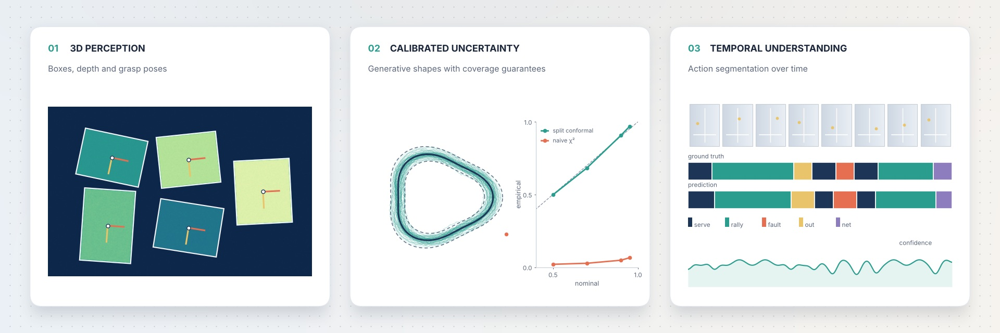

About

I'm an AI and robotics perception engineer based in Bologna. I build vision systems that help robots see and pick up objects.
At I.E.M.A (IMA Group), I work on robot vision for box picking. This includes the vision system of a dual-arm mobile robot and 3D perception for industrial robot arms, where depth cameras are used to estimate box dimensions and compute grasp poses.
In real deployments, a model can make mistakes without anyone noticing, including the robot itself. That's why I'm interested in uncertainty quantification, calibration and embodied AI: I want robots that know when they might be wrong.
Before AI, I spent six years building software and machine learning tools for the hospital information system at FARABI Hospital in Tehran. That's where I learned how much reliability matters when software affects people. I have an MSc in Artificial Intelligence from the University of Bologna.
Experience

AI & Robotics Perception Engineer
I.E.M.A. srl – IMA Group, Bologna, Italy
Sep 2025 – Present
My job is to help robots see the world well enough to act in it. In my first year I've worked across several robot vision projects, from production lines to a mobile robot.
Vision for palletizing and depalletizing. I built the pipeline our robots use to find boxes, measure them and work out exactly where the gripper should go, with sub-millimeter accuracy after calibration. It is integrated with the line's PLCs over OPC-UA. The first version relied on large foundation models and was too slow for production, so I moved it to a lighter architecture and cut end-to-end inference latency by about 70 to 80 percent without losing accuracy.
A dual-arm mobile robot. I work on the vision of a robot with two arms on a mobile base, built to pick up boxes the way a person would. The robot was presented at the Cibus Tec trade fair.
3D perception with depth cameras. I develop systems that estimate box dimensions from depth data and calculate a grasp pose for a robot arm, even when boxes vary in size and sit close together.
Finding objects from text or image queries. I built a detection tool that finds objects from a short text description, an example image or a stored feature map, so the team can test new products without retraining a model. I also built web interfaces that let operators see what the vision system sees and adjust it.
What I've learned here is that a good model is only half the job. The other half is knowing when you can trust it.
Tools: PyTorch, OpenCV, YOLO, Grounding DINO, SAM, OWLv2, OpenVINO, Intel RealSense, ZED X, OAK cameras, FastAPI, Gradio, PLC/OPC-UA
AI Engineer Intern
Mas-Tech srl (Italian Tennis Federation project), Bologna, Italy
Nov 2023 – May 2024
This internship was also my Master's thesis. The Italian Tennis Federation wanted to analyze matches automatically from video. My task was temporal action segmentation and event detection: recognizing serves, faults, balls going out and balls hitting the net. Counting those events gave the federation match statistics without anyone tagging the video by hand.
That turned out to be much harder than recognizing a single image. Many events last only a fraction of a second and look very similar to each other, so the model has to follow the game over time to tell them apart. I built and compared recurrent networks on top of CNN features and Transformer models, and designed a multi-loss training objective. The final model improved on the baselines I started from.
Tools: PyTorch, CNN-RNN, Transformers, video processing
Python Developer & Project Manager
FARABI Hospital, Tehran University of Medical Sciences, Tehran, Iran
Jan 2015 – Sep 2021
I spent six years developing the Hospital Information System (HIS) at FARABI Hospital, a teaching hospital of Tehran University of Medical Sciences. FARABI was the first hospital in Iran to build its own HIS in-house, while other hospitals relied on external vendors. I started as a Python backend developer, building the services behind clinical and administrative workflows, and later integrated machine learning modules for clinical decision support. For the last two years, I managed the project and led a team of six engineers through planning, development and delivery.
Building software for clinical use taught me that reliability is a requirement, not a feature. That is why I now focus on AI systems that can recognize their own limits.
Tools: Python, Django, machine learning, Scrum
Projects

Selected Projects
Calibrated Uncertainty for Conditional Shape Generators
• Can a conditional generative model tell us how uncertain its shapes are? I studied this on synthetic 2D contours whose true conditional distribution is known, so every generated population and prediction set can be checked against the truth.
I trained a five-seed conditional VAE ensemble and compared generated and true populations with the 2-Wasserstein distance. No value of β got both the mean shape and the spread right: high β led to posterior collapse, low β to a prior hole. I then built prediction sets from Mahalanobis nonconformity scores. A naive chi-square threshold covered under 7% of test shapes, while split conformal calibration stayed within 3 percentage points of nominal coverage. Broken down by condition, however, coverage at 90% nominal fell from 0.98 to 0.83, which shows that a marginal guarantee can hide local miscalibration.

Tools & Frameworks: Python, PyTorch, conditional VAE, conformal prediction, NumPy, SciPy, pytest
Code and results on GitHub
Vision Pipeline for Robotic Palletizing and Depalletizing (I.E.M.A)
• Object detection, instance segmentation and pose estimation to localize boxes on pallets, with camera–robot calibration that maps pixel coordinates to millimeter positions for grasping. Deployed on edge devices and integrated with the robot control system over PLC / OPC-UA.
Tools & Frameworks: Python, PyTorch, OpenCV, Grounding DINO, SAM, OpenVINO, OAK cameras, OPC-UA, FastAPI
Open-Vocabulary Object Detection with Text and Image Queries (I.E.M.A)
• A vision-language detection system based on OWLv2 that detects arbitrary objects from text prompts, image queries or stored feature embeddings, with an interactive web interface for visual analysis of the results.
Tools & Frameworks: PyTorch, Hugging Face Transformers, OWLv2, Gradio
Breast Cancer Histology Image Classification
• Classified histology images from the BACH dataset into four classes (normal, benign, in situ and invasive carcinoma). I compared an attention-enhanced ResNet with a fine-tuned Vision Transformer to see how convolutional and transformer architectures differ on microscopic tissue images, and evaluated them with accuracy, precision, recall and F1.
Tools & Frameworks: PyTorch, TorchVision, ResNet, Vision Transformer (ViT), MLflow
Conversational Question Answering on CoQA
• Fine-tuned DistilRoBERTa and BERT-Tiny to predict answer spans in multi-turn conversations, and measured how much the dialogue history improves the answers. Results were compared with F1 across multiple random seeds to check model stability.
Tools & Frameworks: TensorFlow, Hugging Face Transformers, Tokenizers, scikit-learn